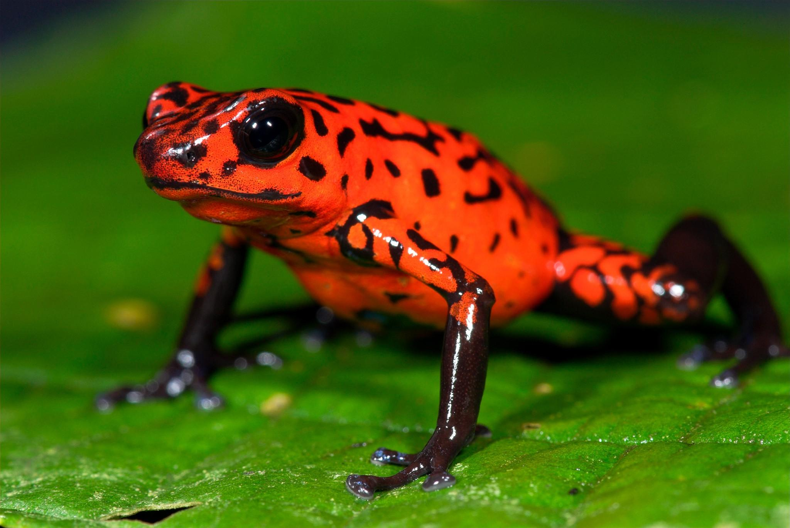

AMPHIBIANS

Amphibians are small vertebrates that need water, or a moist environment, to survive.
The species in this group include frogs, toads, salamanders, and newts.
All can breathe and absorb water through their very thin skin. Amphibians also have special skin glands that produce useful proteins.
Amphibians are ectothermic, tetrapod vertebrates of the class Amphibia.
All living amphibians belong to the group Lissamphibia.
They inhabit a wide variety of habitats, with most species living within terrestrial, fossorial, arboreal or freshwater aquatic ecosystems
Like reptiles, amphibians are cold-blooded. Because of their special skin, they require very specific living conditions.
Too much sun can damage their cells. Too much wind can dry their skin and dehydrate the animal. As a result, amphibians are the first to die off when their habitats are disturbed or contaminated with chemicals like weed killers.
This is the main reason over half of all frog species are in danger of extinction.
Top
Home